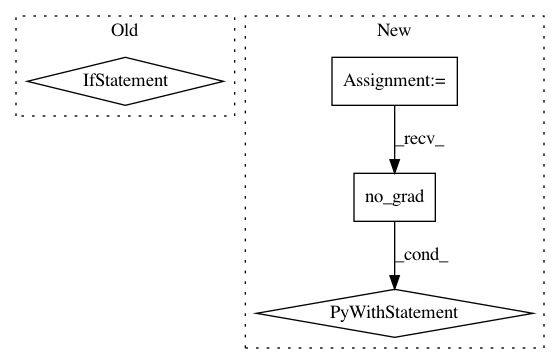

52e09ed9ba6ce987e08334a73a1656792ef7b564,code/deep/DaNN/main.py,,test,#,72
Before Change
correct = 0
criterion = nn.CrossEntropyLoss()
for batch_id, (data, target) in enumerate(data_tar):
if CUDA:
model = model.cuda()
data, target = data.cuda(), target.cuda()
model.eval()
data, target = Variable(data.view(-1, 28 * 28), volatile=True), Variable(target)
ypred, _, _ = model(data, data)
loss = criterion(ypred, target)
After Change
total_loss_test = 0
correct = 0
criterion = nn.CrossEntropyLoss()
with torch.no_grad():
for batch_id, (data, target) in enumerate(data_tar):
data, target = data.view(-1,28 * 28).to(DEVICE),target.to(DEVICE)
model.eval()
ypred, _, _ = model(data, data)
loss = criterion(ypred, target)
pred = ypred.data.max(1)[1] // get the index of the max log-probability
correct += pred.eq(target.data.view_as(pred)).cpu().sum()
total_loss_test += loss.data
accuracy = correct * 100. / len(data_tar.dataset)
res = "Test: total loss: {:.6f}, correct: [{}/{}], testing accuracy: {:.4f}%".format(
total_loss_test, correct, len(data_tar.dataset), accuracy
)
tqdm.write(res)
RESULT_TEST.append([e, total_loss_test, accuracy])
log_test.write(res + "\n")
In pattern: SUPERPATTERN
Frequency: 3
Non-data size: 4
Instances
Project Name: jindongwang/transferlearning
Commit Name: 52e09ed9ba6ce987e08334a73a1656792ef7b564
Time: 2018-04-26
Author: jindongwang@outlook.com
File Name: code/deep/DaNN/main.py
Class Name:
Method Name: test
Project Name: silvandeleemput/memcnn
Commit Name: 9c7e9288e31c947aa54aec1217fedfbce2f85bc6
Time: 2019-05-27
Author: silvandeleemput@gmail.com
File Name: memcnn/trainers/classification.py
Class Name:
Method Name: validate
Project Name: carpedm20/ENAS-pytorch
Commit Name: 92c6ee78097c4c19837005168f77111e78dcbf0b
Time: 2018-03-04
Author: dukebw@mcmaster.ca
File Name: trainer.py
Class Name: Trainer
Method Name: train